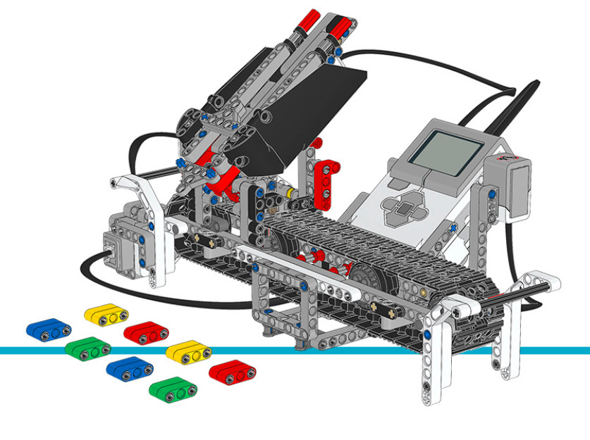

Color Sorter¶
This example program for the color sorter (Figure 17) lets you scan colored Technic beams using the Color Sensor.
Scan the colored beams one by one and add them to the tray. A beep confirms that it has registered the color. When the tray is full or when you press the center button, the robot will start distributing the Technic bricks by color.
You can find building instructions for the color sorter on the LEGO Education website.

{kind=link}
Figure 17 Color Sorter
#!/usr/bin/env pybricks-micropython
from pybricks import ev3brick as brick
from pybricks.ev3devices import Motor, TouchSensor, ColorSensor
from pybricks.parameters import Port, Button, Color, ImageFile, SoundFile
from pybricks.tools import wait
# The colored objects are either red, green, blue, or yellow.
POSSIBLE_COLORS = (Color.RED, Color.GREEN, Color.BLUE, Color.YELLOW)
# Initialize the motors that drive the conveyor belt and eject the objects.
belt_motor = Motor(Port.D)
feed_motor = Motor(Port.A)
# Initialize the Touch Sensor. It is used to detect when the belt motor
# has moved the sorter module all the way to the left.
touch_sensor = TouchSensor(Port.S1)
# Initialize the Color Sensor. It is used to detect the color of the objects.
color_sensor = ColorSensor(Port.S3)
# This is the main loop. It waits for you to scan and insert 8 colored objects.
# Then it sorts them by color. Then the process starts over and you can scan
# and insert the next set of colored objects.
while True:
# Get the feed motor in the correct starting position.
# This is done by running the motor forward until it stalls. This
# means that it cannot move any further. From this end point, the motor
# rotates backward by 180 degrees. Then it is in the starting position.
feed_motor.run_until_stalled(120)
feed_motor.run_angle(450, -180)
# Get the conveyor belt motor in the correct starting position.
# This is done by first running the belt motor backward until the
# touch sensor becomes pressed. Then the motor stops, and the the angle is
# reset to zero. This means that when it rotates backward to zero later
# on, it returns to this starting position.
belt_motor.run(-500)
while not touch_sensor.pressed():
pass
belt_motor.stop()
wait(1000)
belt_motor.reset_angle(0)
# Clear all the contents from the display.
brick.display.clear()
# When we scan the objects, we store all the color numbers in a list.
# We start with an empty list. It will grow as we add colors to it.
color_list = []
# This loop scans the colors of the objects. It repeats until 8 objects
# are scanned and placed in the chute. This is done by repeating the loop
# while the length of the list is still less than 8.
while len(color_list) < 8:
# Show an arrow that points to the color sensor.
brick.display.image(ImageFile.RIGHT)
# Show how many colored objects we have already scanned.
brick.display.text(len(color_list))
# Wait for the center button to be pressed or a color to be scanned.
while True:
# Store True if the center button is pressed or False if not.
pressed = Button.CENTER in brick.buttons()
# Store the color measured by the Color Sensor.
color = color_sensor.color()
# If the center button is pressed or a color is detected,
# break out of the loop.
if pressed or color in POSSIBLE_COLORS:
break
if pressed:
# If the button was pressed, end the loop early.
# We will no longer wait for any remaining objects
# to be scanned and added to the chute.
break
else:
# Otherwise, a color was scanned.
# So we add (append) it to the list.
brick.sound.beep(1000, 100, 100)
color_list.append(color)
# We don't want to register the same color once more if we're
# still looking at the same object. So before we continue, we
# wait until the sensor no longer sees the object.
while color_sensor.color() in POSSIBLE_COLORS:
pass
brick.sound.beep(2000, 100, 100)
# Show an arrow pointing to the center button,
# to ask if we are done.
brick.display.image(ImageFile.BACKWARD)
wait(2000)
# Play a sound and show an image to indicate that we are done scanning.
brick.sound.file(SoundFile.READY)
brick.display.image(ImageFile.EV3)
# Now sort the bricks according the list of colors that we stored.
# We do this by going over each color in the list in a loop.
for color in color_list:
# Wait for one second between each sorting action.
wait(1000)
# Run the conveyor belt motor to the right position based on the color.
if color == Color.BLUE:
brick.sound.file(SoundFile.BLUE)
belt_motor.run_target(500, 10)
elif color == Color.GREEN:
brick.sound.file(SoundFile.GREEN)
belt_motor.run_target(500, 132)
elif color == Color.YELLOW:
brick.sound.file(SoundFile.YELLOW)
belt_motor.run_target(500, 360)
elif color == Color.RED:
brick.sound.file(SoundFile.RED)
belt_motor.run_target(500, 530)
# Now that the conveyor belt is in the correct position,
# eject the colored object.
feed_motor.run_angle(1500, 90)
feed_motor.run_angle(1500, -90)